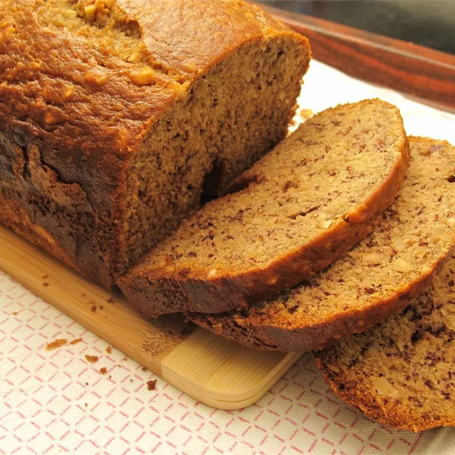

Banana Bread

This bread machine banana bread is quick and easy to make using the Dough setting for mixing, then Bake with the control set to light.
Ingredients
- 2 bananas, peeled and halved lengthwise
- 2 cups all-purpose flour
- ¾ cup white sugar
- 2 large eggs
- 3 tablespoons vegetable oil
- 1 teaspoon baking powder
- ½ teaspoon baking soda
Directions
- Place bananas, flour, sugar, eggs, oil, baking powder, and baking soda in the pan of the bread machine.
- Select Dough setting; press Start.
- Select Bake setting; press Start.
- Remove the pan from the machine.